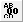
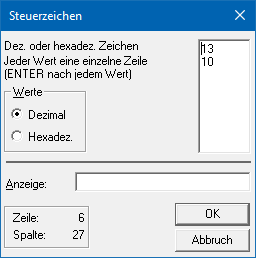

Ø

SteuerzeichenMit den Steuerzeichen können direkt Druckersteuersequenzen auf dem Formular oder für eine Datei erzeugt werden. Diese Informationen werden nicht angedruckt, sondern dienen lediglich der Steuerung.
Eigenschaftsfenster "Steuerzeichen Wert"
Über das Eigenschaftsfenster "Steuerzeichen" können die Steuerzeichen definiert werden.

Ø Werte
Über die Option "Werte" kann definiert werden, ob die Eingabe in Form von dezimalen oder hexadezimalen Zeichen erfolgen soll (siehe Feld "Dez. oder hexadez. Zeichen").
Ø Dez- oder hexadez. Zeichen
In diesem Feld wird, gemäß der Einstellung unter "Werte", der Steuerbefehle hinterlegt. Jeder Wert muss hierbei per Zeilenumbruch einzeln erfasst werden.
Beispiel
Für eine Dateiausgabe soll an einer speziellen Stelle ein Zeilenumbruch erfolgen. Hierfür wird ein dezimales Steuerzeichen mit "13 - Umbruch - 10" hinterlegt.
Ø Anzeige
Im Eingabefeld "Anzeige" können Informationen im Klartext hinterlegen werden um das Formular besser lesbar zu machen. Statt dem Steuerzeichen wird der hier eingetragene Text auf dem Bildschirm angezeigt. Der Eintrag hat aber keinerlei Auswirkungen auf die Ausgabe des Steuerzeichens und wird nach dem Schließen des WinLine Formular Editors gelöscht (ist beim nächsten Aufruf nicht mehr sichtbar).